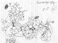

| Tutorial | Sample Game |
|
Basic Rules | NEW! The Squigbificator! |
Open a new Squigbificator window.
It should unsurprising, almost to the point of transparency, to even the most casual reader that the original version of the written Rules that now comprise the foundations of the legalist tradition of Squigby! were composed by the author in a state of considerable intoxication. At the start of these inebriated labors, I (Schuyler) asked Eric, who is widely regarded as the standard-bearer of the spirit of all things Squigby!, how the name of the game ought to be spelled, since the word itself had never been written down. If I recall correctly, he didn't care.
Neither did I, really. So I set about spelling it differently each time, to defy any presumption that there might be an "official" or canonical way to spell Sgwyggbiy!. Needless to say, in my intoxicated state, this seemed like a good idea. A really good idea.
Many Gametimes later, while putting the finishing touches on the Squigby! website, Mike suggested that it would also be a really good idea to have each and every mention of the game's name in the tutorial and sample games dynamically generated with a different spelling. Note that Mike was absolutely sober at the time. I agreed that doing just that was certainly possible, but would probably be a huge pain in the ass to implement.
"Well," said Mike, "How about a little popup box that reloads every few seconds with a new spelling?" This, we agreed, in all sobriety, was not only possible, but fairly easy to implement. Therefore we decided to do it. And it would be known as... The Squigbificator!
Now we actually had to figure out how to do it. Our first attempt, logically, was to assume that all possible spellings of the word "Sqkwyigbbi!" could be defined by what's known in computer science as a "regular language". Therefore, all we had to do was discover the definition of that regular language, and then write a finite automaton, or FA, to generate it.
We started by attempting to design the FA on paper. Our initial design bogged down at about 25 states and dozens of arcs.
 Fig. 1: Our initial finite automaton design.Next, I attempted to express the language using perl's regexp syntax. One of my attempts looked something like this:
Ss*z* g* ( c | [qg]c?k* | c?k+ ) h? ( o*(u+w*|w+u*)i*y*| oo+(i+y*|y+) ) e? ( c | c?k?g+ | g+c?k* | c?k+ ) b+v* ( u? e* ( y+i* | i+j | i+y* ) | e+ )The problem, of course, is that perl's regexp engine takes an string and returns true or false based on whether or not the string matches the regexp. Nothing in there about generating strings. So then I found myself solving the more general problem of, given a perl regexp, generate at random one string from the possibly infinite list of strings the regexp might match, which is sort of like reinventing the fire engine in order to put out a candle.
This, of course, was madness, not that the entire project wasn't madness to begin with. I actually wrote a working prototype, which generated several hundred samples, and then inexplicably broke under the force of repeated tweaking. That was OK, because as Mike pointed out, it seemed to generate some really, really unlikely spellings. An in-depth analysis of the algorithm actually revealed that it in fact was more likely to come up with genuinely weird and unpronounceable spellings than the more obvious ones. Clearly, we were back to the drawing board.
The problem with our prior methods, we reasoned, was that there had been no way to assign weight to a given sub-spelling, to assign preference in the random selection from all possible spellings, to those which weren't so godawful alien to the English-reading eye. So we re-interpreted the solution in terms of a cross between a Markov chain and a Mealy machine, where each transition between states has an associated probability of traversal as well as a defined output.
Furthermore, although we were as yet unsuccessful in our search for the Squigbificator, our meanderings had led us to a crucial facet of the solution, which was that spelling the word "Skwickghbie" is a matter of generating a suitable orthographic representation for each of the word's seven component phonemes, all of which are mutually orthogonal.
This was well and good, but we were back to pen-and-paper decomposition of the state table. While this prospect excited me about as much as that of having my teeth cleaned, it presented no problem whatsoever for methodical Mike, who, within two days, had drawn up an acyclic digraph of the machine, and transcribed it to tabular form. The state table for the Squigbificator contains 149 states, 385 transitions, and takes up about 8K. According to Mike's calculations, using this state table, the Squigbificator can generate more than 3.3 billion unique spellings of the word "Skgwyikgbbe!", ranging from 7 to 27 letters in length.
Fig. 2: An acyclic digraph, in seven parts.A 23-line perl script to simulate the machine described by the state table and generate the appropriate output took me about as many minutes to write. So, in essence, the Squigbificator is really a program that runs a program.
A dispute almost immediately arose over whether the stochastic edge traversal algorithm would actually traverse edges with the specified probabilities as implemented. Mike argued that the artificial ordering of arcs imposed by the tabular format would skew the outcomes. I said no way. So to resolve this question, we wrote a perl script to simulate the arc traversal method with a set of given weights, and calculate the actual outcome percentages first over 1,500, then 5,000, then 50,000 trials. In other words, we wrote a program to test our program that runs a program. The algorithm naturally performed within the limits of statistical significance, but we had to resolve the argument somehow.
Next, Mike wanted to see what the most likely outcomes of the Squigbificator were, given the state table we provided it. Again, we wrote a perl script, this time to analyze the contents of the state table, and generate cumulative probabilities for whole spellings. In short, a program to analyze the program run by our program. Naturally, the most likely spelling is "Squigby!", with a probability of about .24%. All other spellings were significantly less likely.
Finally, Mike wanted to see what the least likely outcomes were. Co-opting the latter script, I hacked it to do the reverse. The least likely spelling found thus far is "Sskcwuuooyieckghbvueeyyiij!", which would be generated only once in every 1.8 quadrillion tries. On average.
Next, we had to make the Squigbificator fit for public consumption, since not everyone has a perl interpreter on their home PC. (Though arguably they should.) So, a perl script was used to convert the data from its tabular form to a series of nested JavaScript data structures. Then the traversal algorithm was trivially reimplemented in JavaScript, which runs comfortably in your web browser. Next, some other tomfoolery was accomplished to pop the window up and refresh it every five seconds. At this rate, you will get to see every possible spelling of "Squuwigkbie!" in about 850 million years, give or take.
Oddly enough, we had a lot of fun with this. We hope you will, too. Enjoy!
Open a new Squigbificator window.